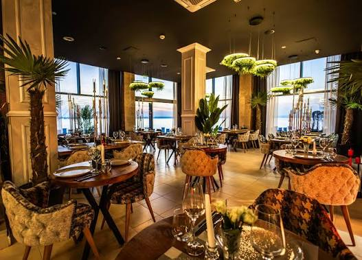

Website modern creat pentru un restaurant premium.

Restaurant Premium este un website elegant, realizat pentru a evidenția preparatele, atmosfera și serviciile restaurantului. Designul este minimalist, cu accente aurii și animații fluide, oferind o experiență modernă vizitatorilor.